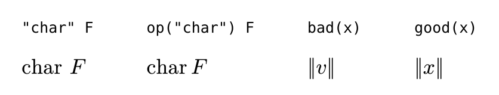
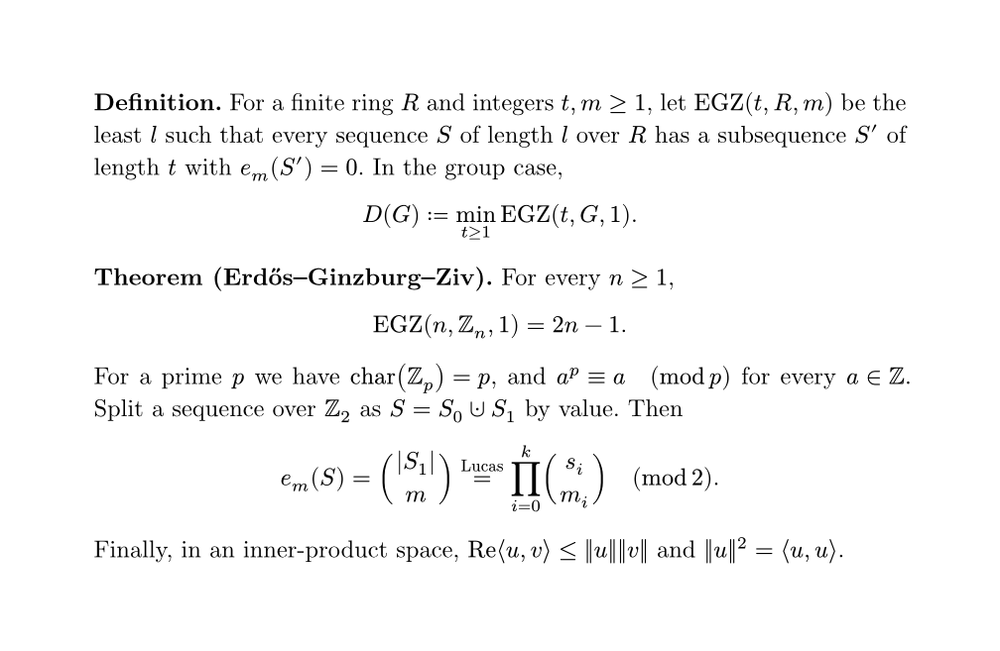

Math and your own macros
Lesson 3 · one rule about names, and your thesis preamble's \newcommands rewritten as one importable file
Your thesis preamble has a block of math macros: \Zb, \egz, \carac, \defeq, \inner, \norm, plus a \charfusion hack for \cupdot. You will turn that block into a file called macros.typ and import it with a single line in any document. You need one rule about names and one keyword.
The rule: one letter is a letter, two letters are a name
From the math reference: "In math, single letters are always displayed as is. Multiple letters, however, are interpreted as variables and functions" (math reference, Variables). Everything below follows from that sentence.
$x y$is two italic letters.$xy$is a lookup of a variable namedxy, and fails withunknown variable: xy. You hit this in Lesson 1.ZZ,sum,product,unionare names that Typst defines for you. So are your own: once you write#let Zb = $ZZ$, the formula$Zb_p$works.- Quotes give literal upright text:
$"char"$. That is\text{char}, not an operator. - To use a one-letter variable, you need the hash:
$#v$. Without it,vis just the letter v.
Operators: \DeclareMathOperator is math.op
Quoted text gets text spacing, not operator spacing. op makes an upright operator that spaces like \sin (op reference):
#let egz = math.op("EGZ")
#let carac = math.op("char")
// \operatorname*: limits under it in display math
#let argmax = math.op("arg max", limits: true)
Typst already defines gcd lcm mod id ker det dim max min lim sup inf log exp and the trig functions (full list), so you only declare your own, such as EGZ.
#let is \newcommand
A let binding names a value, and with parameters it defines a function (scripting reference, Bindings). Math macros are functions whose body is a formula:
// no arguments: a constant
#let Zb = $ZZ$
#let cupdot = $union.dot$
// arguments: note the # before each one
#let inner(a, b) = $lr(chevron.l #a, #b chevron.r)$
#let pmod(n) = $quad (mod #n)$
// an optional argument is a named one with a default
#let equals(by: none) = $limits(=)^#by$Call them in math exactly like built-ins: $inner(u, v)$, $a equiv b pmod(p)$, $a equals(by: "def") b$. Commas separate arguments (function calls in math).
The hash trap. In #let inner(a, b) = $lr(chevron.l a, b chevron.r)$, the body shows the letters a and b whatever you pass, and there is no error. Parameters are one-letter variables, and one letter is a letter. Write #a. (Multi-letter parameter names work without the hash, but then you have two rules to remember instead of one.)
LaTeX's \langle is chevron.l. Older tutorials write angle.l, which is an error in your Typst 0.15.1 (unknown symbol modifier).
Check before you define
Half of the thesis block already exists in Typst. Before you translate a macro, look for it in the symbol list and the math functions:
| Thesis | Typst | Note |
|---|---|---|
\norm{x} | norm(x) | built in, like abs, floor, ceil |
\defeq | := | a shorthand for the symbol colon.eq (≔) |
\cupdot | union.dot | the 10-line \charfusion hack is one symbol: ⊍ |
\Re | Re = ℜ | Typst's Re is the fraktur symbol. Your upright Re needs #let Re = math.op("Re"), which shadows it. |
One file, every document
Put the definitions in macros.typ. Any document loads all of them with #import "macros.typ": *, or only some with #import "macros.typ": Zb, egz (scripting reference, Modules). The path is relative to the importing file, with one limit: by default Typst will not read above the compiled file's folder (path would escape the project root). To share one macro file across folders, compile with --root . and import "/macros.typ"; a leading slash means the project root. Lesson 7 turns this into a proper notes template.
Check yourself
From memory. The last two questions revisit Lessons 1 and 2.
With no definitions, what does $EGZ(G)$ produce?
Multiple letters are a name. There is no variable named EGZ until you define one.
After #let n2(v) = $||v||$, what does $n2(x)$ show?
One letter is a letter, even if a parameter has that name. The body needs #v. No error is raised, so this bug is silent.
The Typst for \DeclareMathOperator{\carac}{char}:
Quotes give text spacing. upright(char) fails because char is an unknown name. op gives operator spacing.
Which thesis macro needs no Typst definition at all?
norm(x) is a built-in math function, like abs(x).
notes/a.typ contains #import "../macros.typ": *. What does typst compile notes/a.typ do?
The default root is the compiled file's folder. Use --root . and import "/macros.typ".
With #set heading(numbering: "1"), how is subsection 1.1 numbered?
A pattern is a template with one symbol per level, separators included. A one-symbol pattern repeats with no separator. Write "1.1".
Which name gives the large ∏ with limits above and below?
Pi is the Greek letter, prod is an unknown name, and Pi.big is not a valid modifier. Large operators are words: sum, product, integral.
Practice: your preamble as macros.typ
exercises/0003/starter.typ is a thesis passage written with your macros. Don't edit it. Your work goes in exercises/0003/macros.typ, which lists each preamble line as a comment. \Zb is done as an example.
- Open the starter in Tinymist preview, or run
typst watch exercises/0003/starter.typ. It fails withunknown variable: egz. Each error names the next missing macro, so the compiler is your checklist. - Define the macros one at a time and save after each one. For
inner, write it without hashes first, look at the last line, then fix it. - When the starter compiles, look at the last line before you define
Re. It renders, but wrongly. Then shadow it. - One commented line in
macros.typneeds no code. Leave a comment saying why. - Compare with the solution below. Check the spacing around ≡ … (mod p) and around EGZ.
Show the rendered solution

Read next
Primary source: the Math overview page of the official reference. Read the sections Variables, Symbols, Function calls and Alignment; it takes about ten minutes, and Alignment (& and \, the align* replacement) is the next thing your thesis needs. Keep the symbol list open while you write. When you migrate many formulas, tex2typst converts them, but check its output against the hash trap above.
Ask your teacher. If something is unclear, or you want a specific thesis formula translated, ask in the chat. Run /teach me Typst to continue to Lesson 4, theorem environments and proofs.